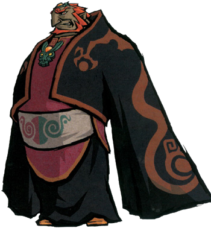
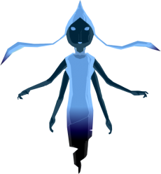

Link: is the main protagonist of the Legend. He is usually depicted as a courageous young boy or teenager in green clothing who leaves his home and any relatives to pursue his destiny: fighting the evil forces threatening the land. On his journey, he learns to make use of many different weapons and items to adapt to, and overcome, the enemies and obstacles in his path.
After navigating both a game's Overworld and its dungeons Link ultimately vanquishes his enemy and becomes a legendary hero. He is considered an iconic character in video gaming and the very symbol of the Zelda franchise, and remains one of the most popular video game protagonists. (wiki)

Ganondorf: Ganondorf is commonly portrayed as the incarnation of pure evil, greed, and power. He is ruthless, cold, and calculating. He is also shown to have an ego, believing that only he is worthy to rule the kingdom and showing an arrogant sense of entitlement. One of Ganondorf’s most defining traits is his unquenchable lust for power. Many of his actions are driven by his unending hunger to increase his dominion over the world. In Ocarina of Time, even after having taken control of Hyrule and possessing the Triforce of Power, Ganondorf is still unsatisfied and continues to seek the other pieces of the Triforce.
Ganondorf is also a skilled strategist, as he is implied to have manipulated Link and Zelda into opening the Door of Time for him, and he also deliberately allows Link to purify the temples he has captured knowing that this will draw Zelda out into the open. (wiki)

Great Fairies: Great Fairies are recurring characters in the Legend of Zelda series. Great Fairies are highly powerful Fairies commonly found residing within well-hidden fountains. They can provide Link with powerful items, as well as enhanced health and magic. They are the closest thing to leaders of the race of Fairies, and are commonly depicted as being distinctly humanoid in appearance. (wiki)